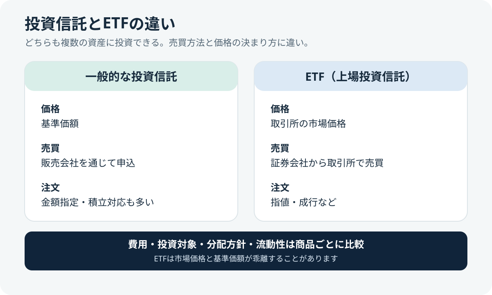
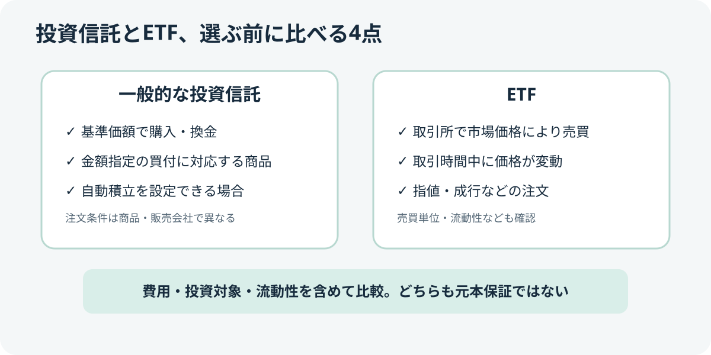

投資信託・ETF / 基礎解説
投資信託とETFの違いは？仕組み・コスト・売買方法を比較
投資信託とETFは、どちらも複数の資産にまとめて投資できる金融商品です。ただし、売買の方法や価格の決まり方、費用の構成などに違いがあります。どちらが一律に優れているわけではなく、商品ごとの条件と自分の目的を確認することが大切です。


1. まず違いを一覧で確認
| 比較点 | 一般的な投資信託（非上場） | ETF（上場投資信託） |
|---|---|---|
| 売買する場所 | 証券会社・銀行などの販売会社 | 証券取引所を通じて証券会社で売買 |
| 価格 | 基準価額。通常、申込時点では確定していない価格で取引される商品が多い | 取引時間中の市場価格。需給により基準価額との乖離が生じることがある |
| 注文方法 | 金額指定や積立に対応する商品・販売会社が多い | 株式に近い注文方法が中心。対応する積立サービスは証券会社による |
| 費用 | 購入時手数料、信託報酬、信託財産留保額など。商品ごとに異なる | 売買手数料、信託報酬、売買スプレッドなど。商品・証券会社により異なる |
| 分配金 | 分配方針は商品による。分配金を出さず運用する商品もある | 分配方針は商品による。分配金が保証されるわけではない |
これは一般的な傾向の比較です。実際の取引条件は商品、証券会社、取引市場によって異なります。
2. 価格の決まり方が違う
一般的な非上場の投資信託は、保有資産をもとに計算する「基準価額」で取引します。注文した時点で約定価格がわからない商品も多いため、注文締切時刻や約定日のルールを目論見書などで確認しましょう。
ETFは取引所に上場しており、取引時間中は市場で価格が変動します。市場価格は純資産価値に連動することを目指しますが、需給や市場環境によって乖離する場合があります。売買時には価格だけでなく、売買スプレッドや流動性も確認します。
3. コストは信託報酬だけで決めない
信託報酬は保有中にかかる主な費用ですが、比較するときはそれだけで結論を出さないようにします。投資信託では購入時手数料や信託財産留保額の有無、ETFでは売買手数料やスプレッドも確認が必要です。保有期間や売買頻度によって総コストは変わります。
チェックのコツ：目論見書・運用報告書・証券会社の手数料表で、同じ条件にそろえて比較しましょう。「信託報酬が低い＝必ず運用成績が良い」とは限りません。
4. どんな点を確認して選ぶ？
- 投資対象の指数・資産と、分散の範囲
- 信託報酬などの費用と、購入・売却時にかかるコスト
- 積立設定や金額指定など、利用する証券会社のサービス
- 純資産総額、流動性、売買スプレッド
- 分配方針、分配金の再投資方法、税金の扱い
- 為替リスク、価格変動リスク、投資対象特有のリスク
- NISAで購入する場合は、対象商品かどうかと口座区分
投資する商品を選ぶ前に、投資期間、値下がりへの耐性、生活に必要な資金を確かめておきましょう。投資には元本割れのリスクがあり、過去の実績は将来の成果を保証しません。
5. 公式情報で確認する
- 日本取引所グループ：ETFの概要 — ETFの仕組みや特徴。
- 日本取引所グループ：ETFのリスク — 価格変動などのリスク。
- J-FLEC：ETFと投資信託に関するQ&A — 商品の違いを理解するための解説。
- 資産運用業協会：投資信託の費用と税金 — 費用・税金の確認。
- 金融庁：NISAを知る・活用する — 投資の基本とNISAの公式情報。
まとめ
投資信託とETFは似た仕組みを持ちますが、売買方法、価格、コストの内訳などが異なります。名称や信託報酬だけで判断せず、投資対象・総コスト・流動性・分配方針・リスクを公式資料で確認することが重要です。
本記事は一般的な情報提供を目的としており、特定の金融商品を推奨するものではありません。内容は2026年10月25日時点で確認した情報をもとにしています。最新の条件は必ず公式資料でご確認ください。
投資商品を調べ始めたばかりの方は、先に投資を始める前に確認したい7つのこともご覧ください。